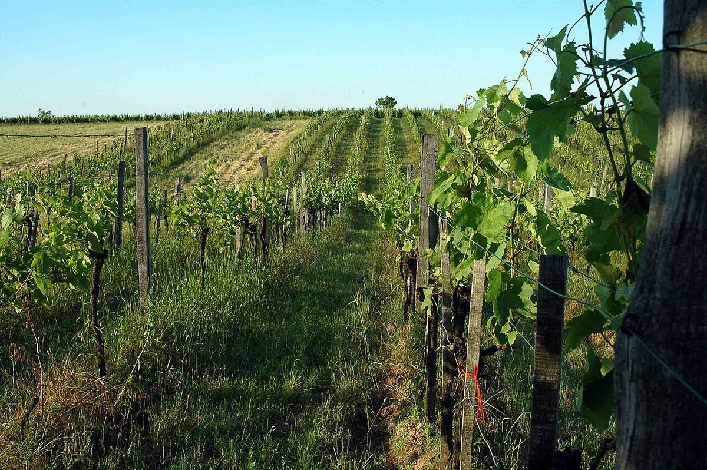

WHITE
Burgenland, Austria’s easternmost state, borders Hungary and is shaped by the Pannonian climate and by Lake Neusiedl. It is Austria’s great region for red wines, above all from Blaufränkisch and Zweigelt, and for nobly sweet wines.

Burgenland was part of the Kingdom of Hungary until 1921, when it was incorporated into Austria, and its winegrowing tradition is closely linked to that of western Hungary. The small town of Rust, on the shores of Lake Neusiedl, was famous from the seventeenth century for its sweet wine, Ruster Ausbruch, made from grapes affected by noble rot; according to tradition, in 1681 the town obtained the status of a free city in exchange for a payment in money and wine. After the 1985 scandal, which particularly affected sweet wines, a generation of producers steered the region towards quality, in both reds and sweet wines. The landscape of Lake Neusiedl, shared with Hungary, was inscribed on UNESCO’s World Heritage List in 2001.
The climate is Pannonian, with warm, dry summers, cold winters and plenty of sunshine, allowing red varieties to ripen well. Lake Neusiedl, very large and shallow, moderates temperatures and in autumn creates morning mists that favour the development of Botrytis cinerea. The region comprises several areas: the Seewinkel, east of the lake, with Illmitz and Apetlon, specialising in sweet wines and reds; the Leithaberg, on the west shore, at the foot of the Leitha hills; Mittelburgenland, also called “Blaufränkisch country”, with Deutschkreutz, Horitschon, Neckenmarkt and Lutzmannsburg; the Rosalia area; and Südburgenland, with the Eisenberg.
Soils are very varied: sand, gravel and saline soils in the Seewinkel; limestone and schist in the Leithaberg; heavy, deep clays in Mittelburgenland, which hold water well; and iron-rich schists on the Eisenberg.
Blaufränkisch is the region’s most prestigious red variety and produces wines with black fruit, spice and lively acidity, capable of ageing; Zweigelt, fruitier and softer, is the most widely planted. St. Laurent, Pinot Noir and international varieties such as Merlot and Cabernet Sauvignon are also grown, often in blends. Leading whites include Welschriesling, Chardonnay, Weissburgunder and Grüner Veltliner. Sweet Beerenauslese, Trockenbeerenauslese and Ausbruch wines, made from Welschriesling, Chardonnay, Scheurebe and other varieties, are a historic speciality. Several DACs now reflect the typical styles of each area, such as Mittelburgenland, Leithaberg, Eisenberg, Neusiedlersee and Ruster Ausbruch.